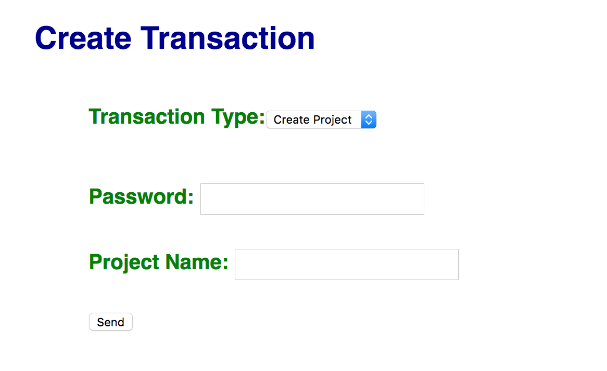
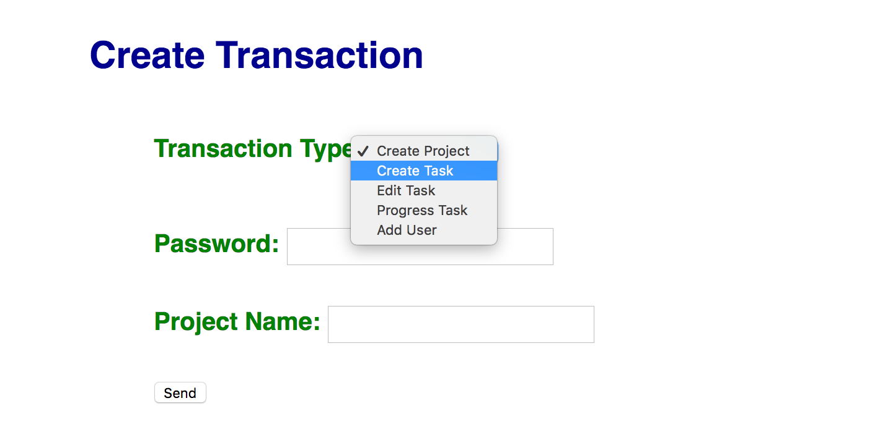
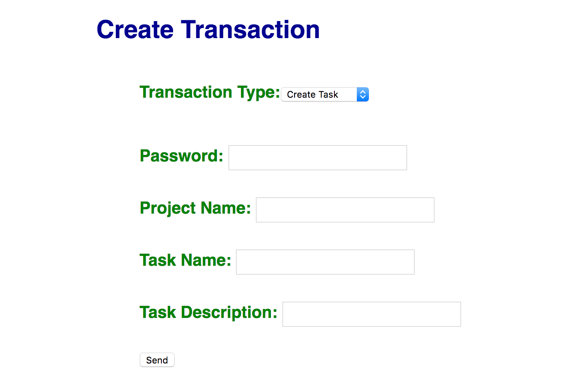
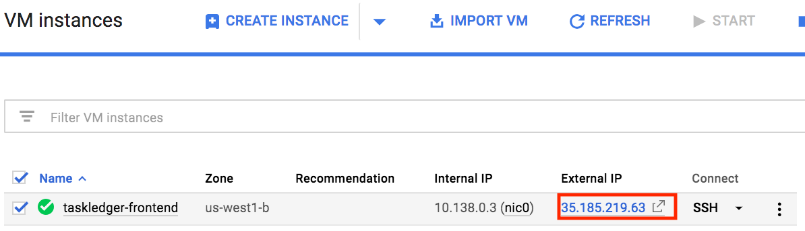
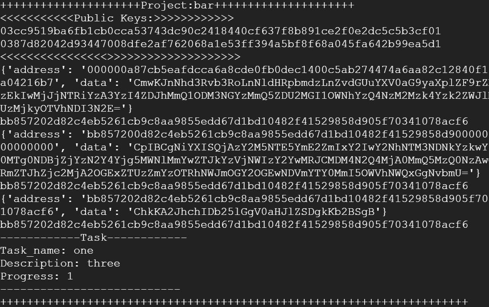

The purpose of this codelab is to create a web app GUI for the code we wrote in the first codelab. A frontend that sends transactions to a hyperledger network would be very useful. The form will look like this, with text input fields for the necessary inputs for a transaction and a send button to send the transaction:

It will also contain a drop down menu to change the type of transaction:

Different types of transactions require different inputs, so it will automatically change the input fields based on the transaction type that is selected:

On your frontend VM from the previous lab, install the Python Flask package to begin programming the web server.
sudo pip3 install flask
Then, create a directory named sawtooth02 and copy the contents of the previous lab over to it.
mkdir <your-course-repo>/sawtooth02 cd <your-course-repo> cp -r sawtooth01/* sawtooth02
Then, add, commit and push the new files.
git add sawtooth02 git commit -m "sawtooth02 initial commit" git push
First, we will need to make some HTML to display the drop down box. The first two lines of the following code snippet do most of the magic for automatically changing the input fields. The input is defined on the second line with the tag. The "onchange" is set to "this.form.submit()," meaning that when a client changes the selected field of the drop down, the form is submitted, calling the "action" defined on the first line, which is "url_for('change_action')," causing the client to be redirected to the page that will call the python function "change_action." The rest of the if blocks in the code snippet simply define the options in the drop down menu and make sure that if a client selects a certain option it will stay selected after redirects.
<form action="{{ url_for('change_action') }}" method=post>
<p class="heading">Transaction Type:<select name="action" onchange="this.form.submit()">
{% if action== "create_project" %}
<option value="create_project" selected>Create Project</option>
{% else %}
<option value="create_project">Create Project</option>
{% endif %}
{% if action== "create_task" %}
<option value="create_task" selected>Create Task</option>
{% else %}
<option value="create_task">Create Task</option>
{% endif %}
{% if action== "edit_task" %}
<option value="edit_task" selected>Edit Task</option>
{% else %}
<option value="edit_task">Edit Task</option>
{% endif %}
{% if action== "progress_task" %}
<option value="progress_task" selected>Progress Task</option>
{% else %}
<option value="progress_task">Progress Task</option>
{% endif %}
{% if action== "add_user" %}
<option value="add_user" selected>Add User</option>
{% else %}
<option value="add_user">Add User</option>
{% endif %}
</select>
</form>Now we can implement the python function to change the input fields. The "change_action" function takes the transaction type as an input from the form request and determines from a dictionary which input fields are necessary for that transaction type. Once it has updated the "fields" dictionary, it calls the "render" function to re-render the webpage with the new input fields.
@app.route('/')
def render():
return render_template('page.html', fields=fields,action=action,project_node=project_node,tasks=tasks)
@app.route('/changeaction',methods=['POST'])
def change_action():
switch = {
"create_project": {"task_name": False, "task_description": False, "new_password": False},
"create_task": {"task_name": True, "task_description": True, "new_password": False},
"edit_task": {"task_name": True, "task_description": True, "new_password": False},
"progress_task": {"task_name": True, "task_description": False, "new_password": False},
"add_user": {"task_name": False, "task_description": False, "new_password": True},
}
global action
action = request.form["action"]
global fields
fields = switch[action]
return redirect(url_for('render'))The web server can now be run:
sudo python3 webapp.py
You can browse the web app by clicking on the external IP address of the frontend instance in the console.

Now we can add the input fields to the HTML file. The following code only displays fields if they have been marked as "true" in the fields dictionary. This form also contains a submit button that calls the function "send()"
<form action="{{ url_for('send') }}" method=post>
<p class="heading">Password: <input type=text name=password>
<p class="heading">Project Name: <input type=text name=project_name>
{% if fields['task_name'] %}
<p class="heading">Task Name: <input type=text name=task_name>
{% endif %}
{% if fields['task_description'] %}
<p class="heading">Task Description: <input type=text name=task_description>
{% endif %}
{% if fields['new_password'] %}
<p class="heading">New Password: <input type=text name=new_password>
{% endif %}
<p><input type=submit value=Send Transaction></p>
</form>The send function uses the form request to get the inputs that the client has entered. With these inputs, we can use the txn_factory class to send the transaction to the network.
@app.route('/send', methods=['POST'])
def send():
args = []
args.append(action)
args.append(request.form['password'])
args.append(request.form['project_name'])
if fields["task_name"]:
args.append(request.form['task_name'])
if fields["task_description"]:
args.append(request.form['task_description'])
if fields["new_password"]:
args.append(request.form['new_password'])
txn_factory = transaction_factory.Txn_Factory();
passcode = args[1]
priv_key = hashlib.sha256(passcode.encode('utf-8')).hexdigest()
args[1] = transaction_factory._create_signer(priv_key)
# run desired function
getattr(txn_factory, args[0])(args[1:])
return redirect(url_for('render'))Make sure your code works: Try sending a transaction of each type and use print_project.py to make sure each one registers correctly:
